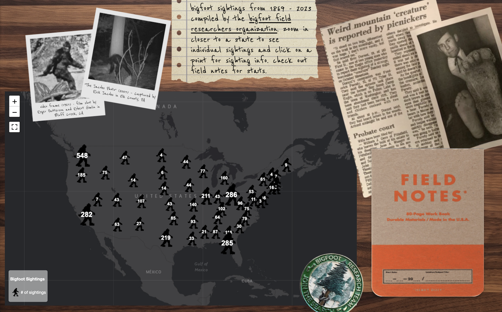
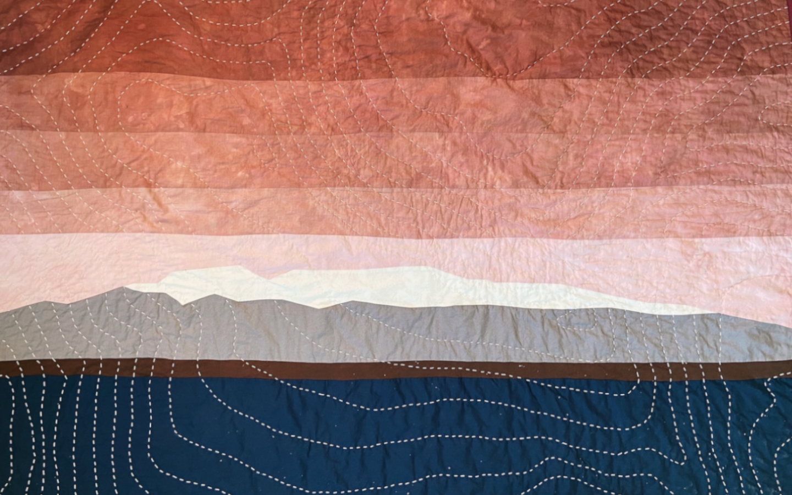

Bigfoot Sightings Dashboard
An open-source interactive web map dashboard using leaflet and chart.js examining bigfoot sightings across the United States from 1869 - 2023.

An open-source interactive web map dashboard using leaflet and chart.js examining bigfoot sightings across the United States from 1869 - 2023.

Using quilting as a means to create both a visual and tactile representation of the Sleeping Lady/Mount Susitna in Alaska. Quilt top was machine stitched to resemble the mountain and sashiko quilted with its topography.